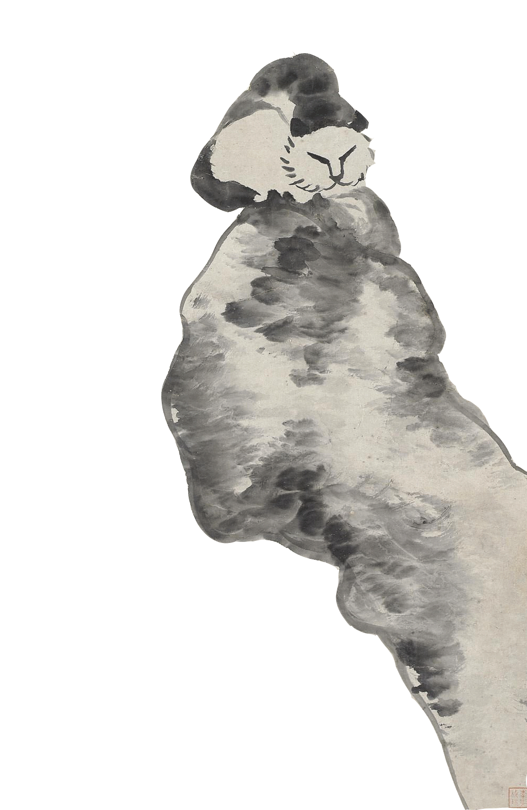
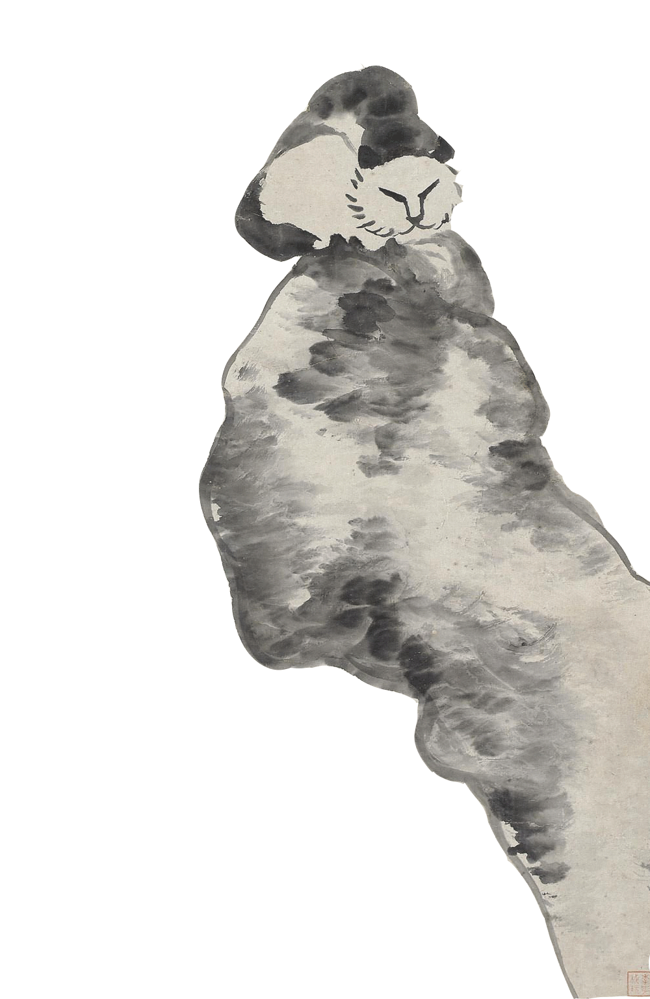

Supervised by Prof. Dr. Christine Coutrie
Semester 2
Tools:
processing, photoshop, leap motion
In this project I brought traditional Chinese literati painting to life.
The interactive part starts with reaching a hand upon Leap Motion controller,
which can sense the movement of your hands, a frog will appear on the screen
and move according to the hand position. All of the tadpoles will swim away from it.
When there's no hand, the frog will disappear and the babies will swim back to their
original position.
I took elements from Badashanren's and Qi Baishi's paintings and made them into animated gifs.
This was a 10-day project in a foundation course 'digital media' at Kunsthochschule Berlin-Weißeesee. I would
like to thank Prof. Dr. Christine Goutrié for the enlightenment of my coding experience. Since then I have been
interested in coding and human computer interaction. And thank Daniel Shiffman to explain basic knowledge about Processing
in such a simple and lovely way.

 
